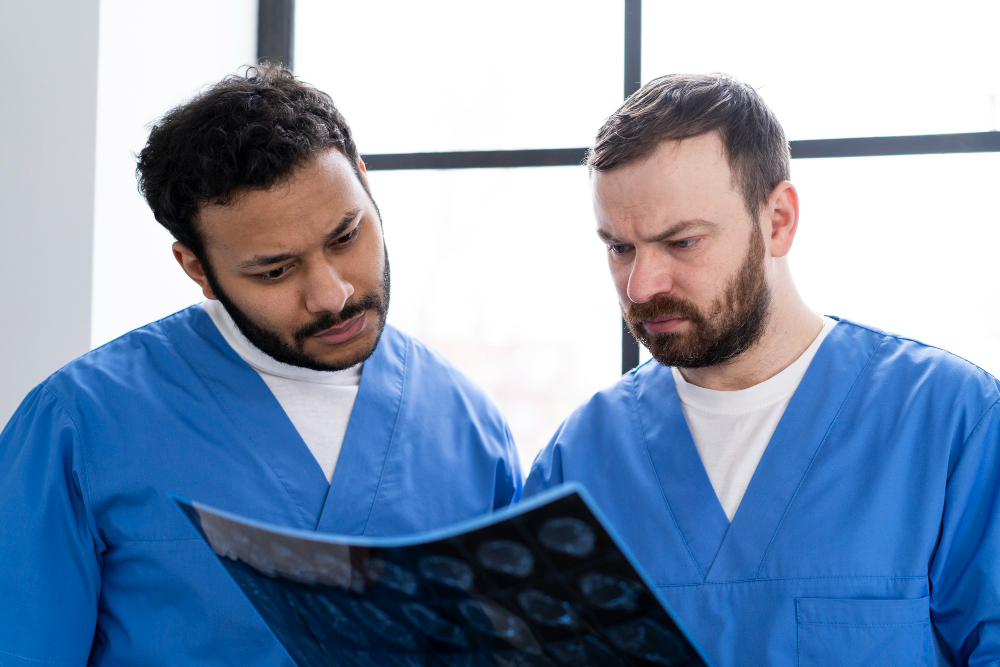

If you're someone who finds themselves fascinated by X-rays and MRI scans, always wondered how those machines work, and dreamed of playing a vital role in the healthcare system, the Radiography and Imaging Technician Course at Yashfeen Education System (YES) in Lahore, Pakistan might just be the perfect fit for you. Spoiler alert: no, you don’t have to become a doctor to work with these machines! Instead, we’re talking about becoming a skilled Radiography and Imaging Technician—a paramedical role that is both rewarding and highly in demand.
In this article, we’re diving deep into the details of this course, its scope, and why choosing Yashfeen Education System (YES) could be your best career decision yet. Oh, and we’ll throw in a little humor along the way because life’s too short to take everything too seriously—even X-rays!
First things first—what exactly is Radiography and Imaging?
Imagine this: You’re watching a doctor review X-rays to spot fractures, or you see a patient being scanned inside an MRI machine. Who makes sure those scans are done correctly? You guessed it—the Radiography and Imaging Technician! These technicians work with cutting-edge imaging technology to help doctors diagnose diseases, injuries, and other conditions.
In simple terms, you’re the person behind the camera—except the camera here sees bones, tissues, and organs! Your skills as a radiography technician will help provide crucial information that guides doctors in making life-saving decisions.
Now, if you're thinking, "This sounds cool, but do I really want to spend a million years studying?" The answer is no! Unlike other healthcare professions that require years of study, the Radiography and Imaging Technician Course at YES is a 2-year paramedical program that sets you on the fast track to your career.
At Yashfeen Education System (YES), we pride ourselves on providing top-quality education in the field of paramedical sciences. Located in Lahore, YES offers a unique blend of theoretical knowledge and practical training. The course curriculum is designed to make you proficient in handling radiographic equipment, performing imaging procedures, and ensuring patient safety. Plus, our experienced faculty members will guide you every step of the way—without overwhelming you with too much medical jargon.
During the 2-year Radiography and Imaging Technician Course at YES, you’ll cover a range of topics that will equip you with the skills to operate diagnostic equipment and understand medical imaging techniques. Here’s a sneak peek of what’s included:
Here’s a typical day for a Radiography and Imaging Technician student at YES:
So, what happens after you complete the course? As a Radiography and Imaging Technician, you’ll be equipped to work in:
And, if you ever decide to continue your education, this course is a solid foundation for further studies in medical imaging technology or related healthcare fields.
In just 2 years, you could be stepping into a rewarding and stable career as a Radiography and Imaging Technician. Yashfeen Education System (YES) offers an incredible opportunity to learn from the best in the field while keeping things simple, practical, and fun. Whether you’re passionate about healthcare, technology, or just love the idea of working in a fast-paced environment, this course could be your gateway to an exciting future.
If you’re ready to embark on a rewarding career filled with discovery, problem-solving, and the satisfaction of knowing your work is crucial to saving lives, the Medical Laboratory Technologist 4-year Degree Program at Yashfeen Education System (YES) is waiting for you.
So, if you’re ready to start your journey toward becoming a skilled radiography professional, don’t hesitate—enroll today at Yashfeen Education System (YES). After all, who wouldn’t want a job where you get to see the inside of people (literally) and make a difference in their lives?